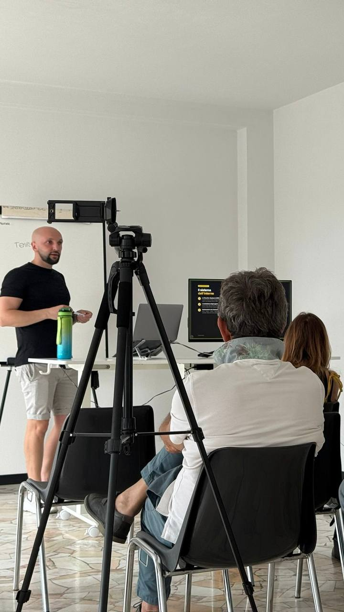

Come ho costruito un team di agenti AI che manda avanti tre aziende mentre sono altrove
Founder di Profree. Automazione AI per imprenditori. Costruisco agenti che lavorano al posto mio.
35 anni · Milano/Brianza · Padre di Blake
Non si tratta di lavorare di più.
Si tratta di delegare meglio.
— Chris Profree